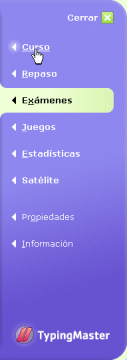

Puede hacer cualquiera de los exámenes disponibles o usar su propio texto. Tras completar el curso, haga el mismo examen de nuevo para ver cuánto ha mejorado.
Para hacer exámenes, pulse "Exámenes" en el menú del programa a la derecha.
Para volver a la lección tras el examen, pulse "Curso" en el menú del programa. Irá a la lección y ejercicio donde quedó.